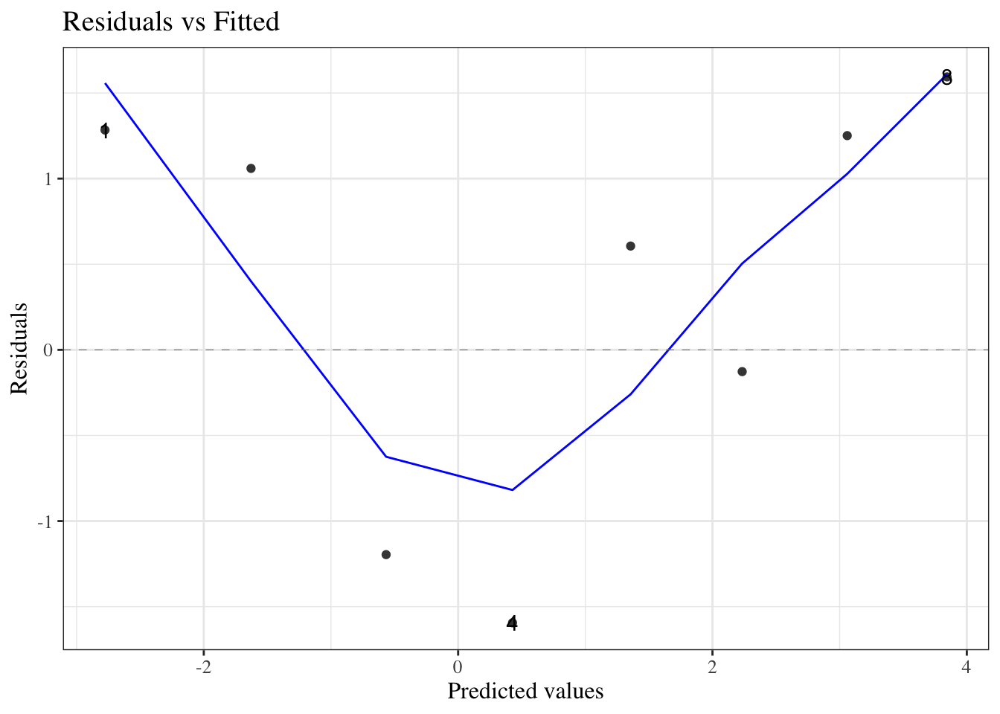
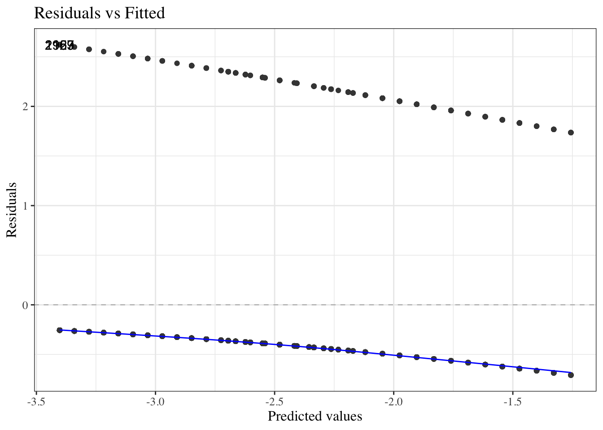

Functions from these packages will be used throughout this document:
Show R code
library(conflicted) # check for conflicting function definitions# library(printr) # inserts help-file output into markdown outputlibrary(rmarkdown) # Convert R Markdown documents into a variety of formats.library(pander) # format tables for markdownlibrary(ggplot2) # graphicslibrary(ggeasy) # help with graphicslibrary(ggfortify) # help with graphicslibrary(dplyr) # manipulate datalibrary(tibble) # `tibble`s extend `data.frame`slibrary(magrittr) # `%>%` and other additional piping toolslibrary(haven) # import Stata fileslibrary(knitr) # format R output for markdownlibrary(tidyr) # Tools to help to create tidy datalibrary(plotly) # interactive graphicslibrary(dobson) # datasets from Dobson and Barnett 2018library(parameters) # format model output tables for markdownlibrary(haven) # import Stata fileslibrary(latex2exp) # use LaTeX in R code (for figures and tables)library(fs) # filesystem path manipulationslibrary(survival) # survival analysislibrary(survminer) # survival analysis graphicslibrary(KMsurv) # datasets from Klein and Moeschbergerlibrary(parameters) # format model output tables forlibrary(webshot2) # convert interactive content to static for pdflibrary(forcats) # functions for categorical variables ("factors")library(stringr) # functions for dealing with stringslibrary(lubridate) # functions for dealing with dates and times
Here are some R settings I use in this document:
Show R code
rm(list =ls()) # delete any data that's already loaded into Rconflicts_prefer(dplyr::filter)ggplot2::theme_set( ggplot2::theme_bw() +# ggplot2::labs(col = "") + ggplot2::theme(legend.position ="bottom",text = ggplot2::element_text(size =12, family ="serif")))knitr::opts_chunk$set(message =FALSE)options('digits'=4)panderOptions("big.mark", ",")pander::panderOptions("table.emphasize.rownames", FALSE)pander::panderOptions("table.split.table", Inf)conflicts_prefer(dplyr::filter) # use the `filter()` function from dplyr() by defaultlegend_text_size =9
3.1.2 Logistic regression versus linear regression
Logistic regression differs from linear regression, which uses the Gaussian (“normal”) distribution to model the outcome variable, conditional on the covariates.
Exercise 3.3 Recall: what kinds of outcomes is linear regression used for?
Solution. Linear regression is typically used for numerical outcomes that aren’t event counts or waiting times for an event. Examples of outcomes that are often analyzed using linear regression include include weight, height, and income.
3.2 Risk Estimation and Prediction
In Epi 203, you have already seen methods for modeling binary outcomes using one covariate that is also binary (such as exposure/non-exposure). In this section, we review one-covariate analyses, with a special focus on risk ratios and odds ratios, which are important concepts for interpreting logistic regression.
Example 3.1 (Oral Contraceptive Use and Heart Attack)
Research question: how does oral contraceptive (OC) use affect the risk of myocardial infarction (MI; a.k.a. heart attack)?
This was an issue when oral contraceptives were first developed, because the original formulations used higher concentrations of hormones. Modern OCs don’t have this issue.
Table 3.1 contains simulated data for an imaginary follow-up (a.k.a. prospective) study in which two groups are identified, one using OCs and another not using OCs, and both groups are tracked for three years to determine how many in each groups have MIs.
Depending on context, “controls” can mean either individuals who don’t experience an exposure of interest, or individuals who don’t experience an outcome of interest.
Definition 3.1 (cases and controls in retrospective studies) In retrospective studies, participants who experience the outcome of interest are called cases, while participants who don’t experience that outcome are called controls.
Definition 3.2 (treatment groups and control groups in prospective studies) In prospective studies, the group of participants who experience the treatment or exposure of interest is called the treatment group, while the participants who receive the baseline or comparison treatment (for example, clinical trial participants who receive a placebo or a standard-of-care treatment rather than an experimental treatment) are called controls.
3.3 Comparing Probabilities
3.3.1 Risk differences
The simplest comparison of two probabilities, \(\pi_1\), and \(\pi_2\), is the difference of their values:
Definition 3.3 (Risk difference) The risk difference of two probabilities, \(\pi_1\), and \(\pi_2\), is the difference of their values: \[\delta(\pi_1,\pi_2) \stackrel{\text{def}}{=}\pi_1 - \pi_2\]
Example 3.2 (Difference in MI risk) In Example 3.1, the maximum likelihood estimate of the difference in MI risk between OC users and OC non-users is:
The relative risk of probability \(\pi_1\) compared to another probability \(\pi_2\), also called the risk ratio, relative risk ratio, probability ratio, or rate ratio, is the ratio of those probabilities:
\[\rho(\pi_1,\pi_2) = \frac{\pi_1}{\pi_2}\]
Example 3.3
Above, we estimated that:
\[\hat{\text{p}}(MI|OC) = 0.0026\]
\[\hat{\text{p}}(MI|\neg OC) = 7\times 10^{-4}\]
So we might estimate that the relative risk of MI for OC versus non-OC is:
We might summarize this result by saying that “the estimated probability of MI among OC users was 3.7143 as high as the estimated probability among OC non-users.
3.3.3 Relative risk differences
Definition 3.5 (Relative risk difference)
Sometimes, we divide the risk difference by the comparison probability; the result is called the relative risk difference:
3.3.4 Changing reference groups in risk comparisons
Risk differences, risk ratios, and relative risk differences are defined by two probabilities, plus a choice of which probability is the baseline or reference probability (i.e., which probability is the subtrahend of the risk difference or the denominator of the risk ratio).
In logistic regression, we will make use of a mathematically-convenient transformation of probability, called odds.
Definition 3.6 (Odds) The odds of an outcome \(A\), which we will represent using \(\omega\) (“omega”), is the probability that the outcome occurs, divided by the probability that it doesn’t occur:
Example 3.5 (Computing odds from probabilities) In Exercise 3.4, we estimated that the probability of MI, given OC use, is \(\pi(OC) \stackrel{\text{def}}{=}\Pr(MI|OC) = 0.0026\). If this estimate is correct, then the odds of MI, given OC use, is:
Theorem 3.3 (One-sample MLE for odds) Let \(X_1,...X_n\) be a set of \(n\)\(\text{iid}\) Bernoulli trials, and let \(X = \sum_{i=1}^nX_i\) be their sum.
Then the maximum likelihood estimate of the odds of \(X=1\), \(\omega\), is:
Lemma 3.1 (Odds of a non-event) If \(\pi\) is the odds of event \(A\) and \(\omega\) is the corresponding odds of \(A\), then the odds of \(\neg A\) are:
\[
\omega(\neg A) = \frac{1-\pi}{\pi}
\]
Proof. Left to the reader.
3.4.2 The inverse odds function
Definition 3.7 (inverse odds function) The inverse odds function,
\[\text{invodds}\left\{\omega\right\} \stackrel{\text{def}}{=}\frac{\omega}{1 + \omega}\] converts odds into their corresponding probabilities (Figure 3.2).
The inverse-odds function takes an odds as input and produces a probability as output. Its domain of inputs is \([0,\infty)\) and its range of outputs is \([0,1]\).
I haven’t seen anyone give the inverse-odds function a concise name; maybe \(\text{prob}()\)?
Exercise 3.13 For Table 3.2, show that \(\hat\theta(Exposed, Unexposed) = \hat\theta(Event, \neg Event)\).
Conditional odds ratios have the same reversibility property:
Theorem 3.10 (Conditional odds ratios are reversible) For any three events \(A\), \(B\), \(C\):
\[\theta(A|B,C) = \theta(B|A,C)\]
Proof. Apply the same steps as for Theorem 3.9, inserting \(C\) into the conditions (RHS of \(|\)) of every expression.
Odds Ratios vs Probability (Risk) Ratios
When the outcome is rare (i.e., its probability is small) for both groups being compared in an odds ratio, the odds of the outcome will be similar to the probability of the outcome, and thus the risk ratio will be similar to the odds ratio.
Case 1: rare events
For rare events, odds ratios and probability (a.k.a. risk, a.k.a. prevalence) ratios will be close:
Example 3.9 In Example 3.1, the outcome is rare for both OC and non-OC participants, so the odds for both groups are similar to the corresponding probabilities, and the odds ratio is similar the risk ratio.
Case 2: frequent events
\(\pi_1 = .4\)\(\pi_2 = .5\)
For more frequently-occurring outcomes, this won’t be the case:
Table 3.1 simulates a follow-up study in which two populations were followed and the number of MI’s was observed. The risks are \(P(MI|OC)\) and \(P(MI|\neg OC)\) and we can estimate these risks from the data.
But suppose we had a case-control study in which we had 100 women with MI and selected a comparison group of 100 women without MI (matched as groups on age, etc.). Then MI is not random, and we cannot compute P(MI|OC) and we cannot compute the risk ratio. However, the odds ratio however can be computed.
The disease odds ratio is the odds for the disease in the exposed group divided by the odds for the disease in the unexposed group, and we cannot validly compute and use these separate parts.
We can still validly compute and use the exposure odds ratio, which is the odds for exposure in the disease group divided by the odds for exposure in the non-diseased group (because exposure can be treated as random):
And these two odds ratios, \(\hat\theta(MI|OC)\) and \(\hat\theta(OC|MI)\), are mathematically equivalent, as we saw in Section 3.4.3.2:
\[\hat\theta(MI|OC) = \hat\theta(OC|MI)\]
Exercise 3.14 Calculate the odds ratio of MI with respect to OC use, assuming that Table 3.1 comes from a case-control study. Confirm that the result is the same as in Example 3.7.
Definition 3.10 (expit, logistic, inverse-logit) The expit function (Figure 3.4) of a log-odds \(\eta\), also known as the inverse-logit function or logistic function, is the inverse-odds of the exponential of \(\eta\):
In Example 3.1, we estimated the risk and the odds of MI for two groups, defined by oral contraceptive use.
If the predictor is quantitative (dose) or there is more than one predictor, the task becomes more difficult.
In this case, we will use logistic regression, which is a generalization of the linear regression models you have been using that can account for a binary response instead of a continuous one.
3.6.1 Binary outcomes models - one group, no covariates
The difference is due to the binomial coefficient \(\left(n\atop x \right)\) which isn’t included in the individual-observations (Bernoulli) version of the model.
3.7 Multiple logistic regression
3.7.1 Coronary heart disease (WCGS) study data
Let’s use the data from the Western Collaborative Group Study (WCGS) (Rosenman et al. (1975)) to explore multiple logistic regression:
“The Western Collaborative Group Study (WCGS) was a large epidemiological study designed to investigate the association between the”type A” behavior pattern and coronary heart disease (CHD)“.
From Wikipedia, “Type A and Type B personality theory”:
“The hypothesis describes Type A individuals as outgoing, ambitious, rigidly organized, highly status-conscious, impatient, anxious, proactive, and concerned with time management….
The hypothesis describes Type B individuals as a contrast to those of Type A. Type B personalities, by definition, are noted to live at lower stress levels. They typically work steadily and may enjoy achievement, although they have a greater tendency to disregard physical or mental stress when they do not achieve.”
Study design
from ?faraway::wcgs:
3154 healthy young men aged 39-59 from the San Francisco area were assessed for their personality type. All were free from coronary heart disease at the start of the research. Eight and a half years later change in CHD status was recorded.
Details (from faraway::wcgs)
The WCGS began in 1960 with 3,524 male volunteers who were employed by 11 California companies. Subjects were 39 to 59 years old and free of heart disease as determined by electrocardiogram. After the initial screening, the study population dropped to 3,154 and the number of companies to 10 because of various exclusions. The cohort comprised both blue- and white-collar employees.
3.7.2 Baseline data collection
socio-demographic characteristics:
age
education
marital status
income
occupation
physical and physiological including:
height
weight
blood pressure
electrocardiogram
corneal arcus;
biochemical measurements:
cholesterol and lipoprotein fractions;
medical and family history and use of medications;
behavioral data:
Type A interview,
smoking,
exercise
alcohol use.
Later surveys added data on:
anthropometry
triglycerides
Jenkins Activity Survey
caffeine use
Average follow-up continued for 8.5 years with repeat examinations.
3.7.3 Load the data
Here, I load the data:
Show R code
### load the data directly from a UCSF website:library(haven)url =paste0(# I'm breaking up the url into two chunks for readability"https://regression.ucsf.edu/sites/g/files/","tkssra6706/f/wysiwyg/home/data/wcgs.dta")wcgs = haven::read_dta(url)
wcgs |>select(-c(id, uni, t1)) |>tableby(chd69 ~ ., data = _) |>summary(pfootnote =TRUE,title ="Baseline characteristics by CHD status at end of follow-up")
Baseline characteristics by CHD status at end of follow-up
No (N=2897)
Yes (N=257)
Total (N=3154)
p value
Age (years)
< 0.0011
Mean (SD)
46.082 (5.457)
48.490 (5.801)
46.279 (5.524)
Range
39.000 - 59.000
39.000 - 59.000
39.000 - 59.000
Arcus Senilis
< 0.0012
N-Miss
0
2
2
FALSE
2058 (71.0%)
153 (60.0%)
2211 (70.1%)
TRUE
839 (29.0%)
102 (40.0%)
941 (29.9%)
Behavioral Pattern
< 0.0012
A1
234 (8.1%)
30 (11.7%)
264 (8.4%)
A2
1177 (40.6%)
148 (57.6%)
1325 (42.0%)
B3
1155 (39.9%)
61 (23.7%)
1216 (38.6%)
B4
331 (11.4%)
18 (7.0%)
349 (11.1%)
Body Mass Index (kg/m2)
< 0.0011
Mean (SD)
24.471 (2.561)
25.055 (2.579)
24.518 (2.567)
Range
11.191 - 37.653
19.225 - 38.947
11.191 - 38.947
Total Cholesterol
< 0.0011
N-Miss
12
0
12
Mean (SD)
224.261 (42.217)
250.070 (49.396)
226.372 (43.420)
Range
103.000 - 400.000
155.000 - 645.000
103.000 - 645.000
Diastolic Blood Pressure
< 0.0011
Mean (SD)
81.723 (9.621)
85.315 (10.311)
82.016 (9.727)
Range
58.000 - 150.000
64.000 - 122.000
58.000 - 150.000
Behavioral Pattern
< 0.0012
Type A
1411 (48.7%)
178 (69.3%)
1589 (50.4%)
Type B
1486 (51.3%)
79 (30.7%)
1565 (49.6%)
Height (inches)
0.2901
Mean (SD)
69.764 (2.539)
69.938 (2.410)
69.778 (2.529)
Range
60.000 - 78.000
63.000 - 77.000
60.000 - 78.000
Ln of Systolic Blood Pressure
< 0.0011
Mean (SD)
4.846 (0.110)
4.900 (0.125)
4.850 (0.112)
Range
4.585 - 5.438
4.605 - 5.298
4.585 - 5.438
Ln of Weight
< 0.0011
Mean (SD)
5.126 (0.123)
5.155 (0.118)
5.128 (0.123)
Range
4.357 - 5.670
4.868 - 5.768
4.357 - 5.768
Cigarettes per day
< 0.0011
Mean (SD)
11.151 (14.329)
16.665 (15.657)
11.601 (14.518)
Range
0.000 - 99.000
0.000 - 60.000
0.000 - 99.000
Systolic Blood Pressure
< 0.0011
Mean (SD)
128.034 (14.746)
135.385 (17.473)
128.633 (15.118)
Range
98.000 - 230.000
100.000 - 200.000
98.000 - 230.000
Current smoking
< 0.0012
No
1554 (53.6%)
98 (38.1%)
1652 (52.4%)
Yes
1343 (46.4%)
159 (61.9%)
1502 (47.6%)
Observation (follow up) time (days)
< 0.0011
Mean (SD)
2775.158 (562.205)
1654.700 (859.297)
2683.859 (666.524)
Range
238.000 - 3430.000
18.000 - 3229.000
18.000 - 3430.000
Type of CHD Event
None
0 (0.0%)
0 (0.0%)
0 (0.0%)
infdeath
2897 (100.0%)
0 (0.0%)
2897 (91.9%)
silent
0 (0.0%)
135 (52.5%)
135 (4.3%)
angina
0 (0.0%)
71 (27.6%)
71 (2.3%)
4
0 (0.0%)
51 (19.8%)
51 (1.6%)
Weight (lbs)
< 0.0011
Mean (SD)
169.554 (21.010)
174.463 (21.573)
169.954 (21.096)
Range
78.000 - 290.000
130.000 - 320.000
78.000 - 320.000
Weight Category
< 0.0012
< 140
217 (7.5%)
15 (5.8%)
232 (7.4%)
140-170
1440 (49.7%)
98 (38.1%)
1538 (48.8%)
170-200
1049 (36.2%)
122 (47.5%)
1171 (37.1%)
> 200
191 (6.6%)
22 (8.6%)
213 (6.8%)
RECODE of age (Age)
< 0.0012
35-40
512 (17.7%)
31 (12.1%)
543 (17.2%)
41-45
1036 (35.8%)
55 (21.4%)
1091 (34.6%)
46-50
680 (23.5%)
70 (27.2%)
750 (23.8%)
51-55
463 (16.0%)
65 (25.3%)
528 (16.7%)
56-60
206 (7.1%)
36 (14.0%)
242 (7.7%)
Linear Model ANOVA
Pearson’s Chi-squared test
3.7.6 Data by age and personality type
For now, we will look at the interaction between age and personality type (dibpat). To make it easier to visualize the data, we summarize the event rates for each combination of age:
We make an iterative series of guesses, and each guess helps us make the next guess better (i.e., higher log-likelihood). You can see some information about this process like so:
After each iteration of the fitting procedure, the deviance (\(2(\ell_{\text{full}} - \ell(\hat\beta))\) ) is printed. You can see that the algorithm took six iterations to converge to a solution where the likelihood wasn’t changing much anymore.
3.9 Model comparisons for logistic models
3.9.1 Deviance test
We can compare the maximized log-likelihood of our model, \(\ell(\hat\beta; \mathbf x)\), versus the log-likelihood of the full model (aka saturated model aka maximal model), \(\ell_{\text{full}}\), which has one parameter per covariate pattern. With enough data, \(2(\ell_{\text{full}} - \ell(\hat\beta; \mathbf x)) \dot \sim \chi^2(N - p)\), where \(N\) is the number of distinct covariate patterns and \(p\) is the number of \(\beta\) parameters in our model. A significant p-value for this deviance statistic indicates that there’s some detectable pattern in the data that our model isn’t flexible enough to catch.
Caution
The deviance statistic needs to have a large amount of data for each covariate pattern for the \(\chi^2\) approximation to hold. A guideline from Dobson is that if there are \(q\) distinct covariate patterns \(x_1...,x_q\), with \(n_1,...,n_q\) observations per pattern, then the expected frequencies \(n_k \cdot \pi(x_k)\) should be at least 1 for every pattern \(k\in 1:q\).
If you have covariates measured on a continuous scale, you may not be able to use the deviance tests to assess goodness of fit.
3.9.2 Hosmer-Lemeshow test
If our covariate patterns produce groups that are too small, a reasonable solution is to make bigger groups by merging some of the covariate-pattern groups together.
Hosmer and Lemeshow (1980) proposed that we group the patterns by their predicted probabilities according to the model of interest. For example, you could group all of the observations with predicted probabilities of 10% or less together, then group the observations with 11%-20% probability together, and so on; \(g=10\) categories in all.
Then we can construct a statistic \[X^2 = \sum_{c=1}^g \frac{(o_c - e_c)^2}{e_c}\] where \(o_c\) is the number of events observed in group \(c\), and \(e_c\) is the number of events expected in group \(c\) (based on the sum of the fitted values \(\hat\pi_i\) for observations in group \(c\)).
If each group has enough observations in it, you can compare \(X^2\) to a \(\chi^2\) distribution; by simulation, the degrees of freedom has been found to be approximately \(g-2\).
Our statistic is \(X^2 = 1.11028711\); \(p(\chi^2(1) > 1.11028711) = 0.29201955\), which is our p-value for detecting a lack of goodness of fit.
Unfortunately that grouping plan left us with just three categories with any observations, so instead of grouping by 10% increments of predicted probability, typically analysts use deciles of the predicted probabilities:
Now we have more evenly split categories. The p-value is \(0.56041994\), still not significant.
Graphically, we have compared:
Show R code
HL_plot = HL_table |>ggplot(aes(x = pred_prob_cats1)) +geom_line(aes(y = e, x = pred_prob_cats1, group ="Expected", col ="Expected")) +geom_point(aes(y = e, size = n, col ="Expected")) +geom_point(aes(y = o, size = n, col ="Observed")) +geom_line(aes(y = o, col ="Observed", group ="Observed")) +scale_size(range =c(1,4)) +theme_bw() +ylab("number of CHD events") +theme(axis.text.x =element_text(angle =45))
Don’t worry about these options for now; I chose them to match autoplot() as closely as I can. plot.glm and autoplot use stats::lowess instead of stats::loess; stats::lowess is older, hard to use with geom_smooth, and hard to match exactly with stats::loess; see https://support.bioconductor.org/p/2323/.]
Show R code
wcgs_response_resid_plot |>ggplotly()
We can see a slight fan-shape here: observations on the right have larger variance (as expected since \(var(\bar y) = \pi(1-\pi)/n\) is maximized when \(\pi = 0.5\)).
3.10.3 Pearson residuals
The fan-shape in the response residuals plot isn’t necessarily a concern here, since we haven’t made an assumption of constant residual variance, as we did for linear regression.
However, we might want to divide by the standard error in order to make the graph easier to interpret. Here’s one way to do that:
The Pearson (chi-squared) residual for covariate pattern \(k\) is: \[
\begin{aligned}
X_k &= \frac{\bar y_k - \hat\pi_k}{\sqrt{\hat \pi_k (1-\hat\pi_k)/n_k}}
\end{aligned}
\]
Let’s take a look at the Pearson residuals for our CHD model from the WCGS data (graphed against the fitted values on the logit scale):
Show R code
library(ggfortify)
Show R code
autoplot(chd_glm_strat_grouped, which =1, ncol =1) |>print()
The fan-shape is gone, and these residuals don’t show any obvious signs of model fit issues.
Pearson residuals plot for beetles data
If we create the same plot for the beetles model, we see some strong evidence of a lack of fit:
Show R code
autoplot(beetles_glm_grouped, which =1, ncol =1) |>print()

Pearson residuals with individual (ungrouped) data
What happens if we try to compute residuals without grouping the data by covariate pattern?
Show R code
library(ggfortify)
Show R code
autoplot(chd_glm_strat, which =1, ncol =1) |>print()

Meaningless.
Residuals plot by hand (optional section)
If you want to check your understanding of what these residual plots are, try building them yourself:
Show R code
wcgs_grouped = wcgs_grouped |>mutate(fitted = chd_glm_strat_grouped |>fitted(),fitted_logit = fitted |>logit(),resids = chd_glm_strat_grouped |>resid(type ="pearson") )wcgs_resid_plot1 = wcgs_grouped |>ggplot(mapping =aes(x = fitted_logit,y = resids ) ) +geom_point(aes(col = dibpat) ) +geom_hline(yintercept =0) +geom_smooth(se =FALSE, method.args =list(span=2/3,degree=1,family="symmetric",iterations=3,surface="direct"# span = 2/3, # iterations = 3 ),method = stats::loess)# plot.glm and autoplot use stats::lowess, which is hard to use with # geom_smooth and hard to match exactly; # see https://support.bioconductor.org/p/2323/
Show R code
wcgs_resid_plot1 |>ggplotly()
3.10.4 Pearson chi-squared goodness of fit test
The Pearson chi-squared goodness of fit statistic is: \[
X^2 = \sum_{k=1}^m X_k^2
\] Under the null hypothesis that the model in question is correct (i.e., sufficiently complex), \(X^2\ \dot \sim\ \chi^2(N-p)\).
For our CHD model, the p-value for this test is 0.26523556; no significant evidence of a lack of fit at the 0.05 level.
Standardized Pearson residuals
Especially for small data sets, we might want to adjust our residuals for leverage (since outliers in \(X\) add extra variance to the residuals):
\[r_{P_k} = \frac{X_k}{\sqrt{1-h_k}}\]
where \(h_k\) is the leverage of \(X_k\). The functions autoplot() and plot.lm() use these for some of their graphs.
3.10.5 Deviance residuals
For large sample sizes, the Pearson and deviance residuals will be approximately the same. For small sample sizes, the deviance residuals from covariate patterns with small sample sizes can be unreliable (high variance).
When I try to use link ="log" in practice, I often get errors about not finding good starting values for the estimation procedure. This is likely because the model is producing fitted probabilities greater than 1.
When this happens, you can try to fit Poisson regression models instead (we will see those soon!). But then the outcome distribution isn’t quite right, and you won’t get warnings about fitted probabilities greater than 1. In my opinion, the Poisson model for binary outcomes is confusing and not very appealing.
Rosenman, Ray H, Richard J Brand, C David Jenkins, Meyer Friedman, Reuben Straus, and Moses Wurm. 1975. “Coronary Heart Disease in the Western Collaborative Group Study: Final Follow-up Experience of 8 1/2 Years.”JAMA 233 (8): 872–77. https://doi.org/10.1001/jama.1975.03260080034016.
Vittinghoff, Eric, David V Glidden, Stephen C Shiboski, and Charles E McCulloch. 2012. Regression Methods in Biostatistics: Linear, Logistic, Survival, and Repeated Measures Models. 2nd ed. Springer. https://doi.org/10.1007/978-1-4614-1353-0.
Source Code
---subtitle: "Logistic regression and variations"---# Models for Binary Outcomes {#sec-Bernoulli-models}---{{< include shared-config.qmd >}}### Acknowledgements {.unnumbered}This content is adapted from:- @dobson4e, Chapter 7- @vittinghoff2e, Chapter 5- [David Rocke](https://dmrocke.ucdavis.edu/)'s materials from the [2021 edition of Epi 204](https://dmrocke.ucdavis.edu/Class/EPI204-Spring-2021/EPI204-Spring-2021.html)## Introduction### What is logistic regression?**Logistic regression** is a framework for modeling [binary](probability.qmd#def-binary) outcomes, conditional on one or more *predictors* (a.k.a. *covariates*).---::: {#exr-binary-examples}#### Examples of binary outcomesWhat are some examples of binary outcomes in the health sciences?:::----:::: {.solution}{{< include binary-outcome-examples.qmd >}}::::---Logistic regression uses the [Bernoulli](probability.qmd#def-bernoulli) distribution to model the outcome variable, conditional on one or more covariates. ---::: {#exr-def-bernoulli}Write down a mathematical definition of the Bernoulli distribution.:::---::::{.solution}{{< include def-bernoulli.qmd >}}::::---### Logistic regression versus linear regressionLogistic regression differs from linear regression, which uses the Gaussian ("normal") distribution to model the outcome variable, conditional on the covariates.---:::: {#exr-linear}Recall: what kinds of outcomes is linear regression used for?::::---::: {.solution}Linear regression is typically used for numerical outcomes that aren't event counts or waiting times for an event. Examples of outcomes that are often analyzed using linear regression include include weight, height, and income.:::## Risk Estimation and Prediction::: notesIn Epi 203, you have already seen methods for modeling binary outcomes using one covariate that is also binary (such as exposure/non-exposure).In this section, we review one-covariate analyses, with a special focus on risk ratios and odds ratios, which are important concepts for interpreting logistic regression.:::---:::::{#exm-oc-mi}### Oral Contraceptive Use and Heart Attack* Research question: how does oral contraceptive (OC) use affect the risk of myocardial infarction (MI; a.k.a. heart attack)?:::{.notes}This was an issue when oral contraceptives were first developed, because the original formulations used higher concentrations of hormones. Modern OCs don't have this issue.@tbl-oc-mi contains simulated data for an imaginary follow-up (a.k.a. *prospective*) study in which two groups are identified, one using OCs and another not using OCs, and both groups are tracked for three years to determine how many in each groups have MIs.:::```{r}#| message: false#| code-fold: true#| label: tbl-oc-mi#| tbl-cap: Simulated data from study of oral contraceptive use and heart attack risklibrary(dplyr)oc_mi =tribble(~OC, ~MI, ~Total,"OC use", 13, 5000,"No OC use", 7, 10000 ) |>mutate(`No MI`= Total - MI) |>relocate(`No MI`, .after = MI)totals = oc_mi |>summarize(across(c(MI, `No MI`, Total), sum)) |>mutate(OC ="Total")tbl_oc_mi =bind_rows(oc_mi, totals)tbl_oc_mi```:::::---::::{#exr-probs}Review: estimate the probabilities of MI for OC users and non-OC users in @exm-oc-mi.::::----:::{.solution}```{r, include = FALSE}#| label: calc-prsp_MI_OC = 13/5000p_MI_nOC = 7/10000```$$\ph(MI|OC) = \frac{13}{5000} = `r p_MI_OC`$$$$\ph(MI|\neg OC) = \frac{7}{10000} = `r p_MI_nOC`$$:::---#### Controls::::{.callout-note}##### Two meanings of "controls"Depending on context, "controls" can mean either individuals who don't experience an *exposure* of interest, or individuals who don't experience an *outcome* of interest.::::---:::{#def-cases-retrospective}##### cases and controls in retrospective studiesIn *retrospective studies*, participants who experience the outcome of interest are called **cases**, while participants who don't experience that outcome are called **controls**. :::---:::{#def-cases-prospective}##### treatment groups and control groups in prospective studiesIn *prospective studies*, the group of participants who experience the treatment or exposure of interest is called the **treatment group**, while the participants who receive the baseline or comparison treatment (for example, clinical trial participants who receive a placebo or a standard-of-care treatment rather than an experimental treatment) are called **controls**.:::## Comparing Probabilities### Risk differences::: notesThe simplest comparison of two probabilities, $\pi_1$, and $\pi_2$, is the difference of their values:::::::{#def-RD}#### Risk differenceThe **risk difference** of two probabilities, $\pi_1$, and $\pi_2$, is the difference of their values: $$\delta(\pi_1,\pi_2) \eqdef \pi_1 - \pi_2$$:::---:::{#exm-RD}#### Difference in MI riskIn @exm-oc-mi, the maximum likelihood estimate of the difference in MI risk between OC users and OC non-users is:```{r, include = FALSE}#| label: compute-risk-diffrd_OC = p_MI_OC - p_MI_nOC```$$\begin{aligned}\hat\delta(\pi(OC), \pi(\neg OC))&= \delta(\hat\pi(OC), \hat\pi(\neg OC))\\&= \hat\pi(OC) - \hat\pi(\neg OC)\\&= `r p_MI_OC` - `r p_MI_nOC`\\&= `r rd_OC`\end{aligned}$$:::---### Risk ratios:::{#def-RR}### Relative risk ratios:::: notesThe **relative risk** of probability $\pi_1$ compared to another probability $\pi_2$, also called the **risk ratio**, **relative risk ratio**, **probability ratio**, or **rate ratio**, is the ratio of those probabilities:::::$$\rho(\pi_1,\pi_2) = \frac{\pi_1}{\pi_2}$$:::---:::{#exm-RR}:::: notesAbove, we estimated that:::::$$\ph(MI|OC) = `r 13/5000`$$$$\ph(MI|\neg OC) = `r 7/10000`$$:::: notesSo we might estimate that the *relative risk* of MI for OC versus non-OC is:::::```{r}#| label: compute-risk-ratiorr = (13/5000)/(7/10000)```$$\begin{aligned}\hat\rho(OC, \neg OC)&=\frac{\ph(MI|OC)}{\ph(MI|\neg OC)}\\&= \frac{`r 13/5000`}{`r 7/10000`}\\&= `r rr`\end{aligned}$$:::: notesWe might summarize this result by saying that "the estimated probability of MI among OC users was `r rr` as high as the estimated probability among OC non-users. :::::::---### Relative risk differences:::{#def-RRD}#### Relative risk difference:::: notesSometimes, we divide the risk difference by the comparison probability; the result is called the **relative risk difference**:::::$$\xi(\pi_1,\pi_2) \eqdef \frac{\delta(\pi_1,\pi_2)}{\pi_2}$$:::---:::{#thm-rrd-vs-rr}#### Relative risk difference equals risk ratio minus 1$$\xi(\pi_1,\pi_2) = \rho(\pi_1,\pi_2) - 1$$:::---::: proof$$\begin{aligned}\xi(\pi_1,\pi_2) &\eqdef \frac{\delta(\pi_1,\pi_2)}{\pi_2}\\&= \frac{\pi_1-\pi_2}{\pi_2}\\&= \frac{\pi_1}{\pi_2} - 1\\&= \rho(\pi_1,\pi_2) - 1\end{aligned}$$:::---### Changing reference groups in risk comparisons:::: notesRisk differences, risk ratios, and relative risk differences are defined by two probabilities, plus a choice of which probability is the **baseline** or **reference** probability (i.e., which probability is the subtrahend of the risk difference or the denominator of the risk ratio).:::$$\delta(\pi_2,\pi_1) = -\delta(\pi_1, \pi_2)$$$$\rho(\pi_2,\pi_1) = \inv{\rho(\pi_1,\pi_2)}$$$$\xi(\pi_2,\pi_1) = \inv{\xi(\pi_2,\pi_1) + 1} - 1$$:::{#exr-change-ref-group}Prove the relationships above.:::---:::{#exm-ref}#### Switching the reference group in a risk ratioAbove, we estimated that the risk ratio of OC versus non-OC is:$$\begin{aligned}\rho(OC, \neg OC)&= `r (13/5000)/(7/10000)`\end{aligned}$$In comparison, the risk ratio for non-OC versus OC is:$$\begin{aligned}\rho(\neg OC, OC)&=\frac{\ph(MI|\neg OC)}{\ph(MI|OC)}\\&= \frac{`r 7/10000`}{`r 13/5000`}\\&= `r (7/10000)/(13/5000)`\\&= \frac{1}{\rho(OC, \neg OC)}\end{aligned}$$:::## Odds and Odds Ratios### Odds and probabilities::: notesIn logistic regression, we will make use of a mathematically-convenient transformation of probability, called *odds*.::::::{#def-odds}#### OddsThe **odds** of an outcome $A$, which we will represent using $\odds$ ("omega"), is the probability that the outcome occurs, divided by the probability that it doesn't occur:$$\odds(A) \eqdef \frac{\Pr(A)}{\Pr(\neg A)}$$:::---:::{#thm-prob-to-odds}If the probability of an outcome $A$ is $\Pr(A)=\pi$, then the corresponding odds of $A$ is:$$\oddsf{\pi} = \frac{\pi}{1-\pi}$$ {#eq-odds-probs}:::---:::{.proof}$$\ba\Pr(\neg A) &= 1 - \Pr(A)\\ &= 1 - \pi\ea$$$$\ba\tf \odds(A) &\eqdef \frac{\Pr(A)}{\Pr(\neg A)} \\ &= \frac{\pi}{1-\pi}\ea$$:::---::: notes[Function @eq-odds-probs], which transforms probabilities into odds, can be called the **odds function**. @fig-odds-probs graphs the shape of this function.:::```{r}#| code-fold: true#| label: fig-odds-probs#| fig-cap: "Odds versus probability"odds =function(pi) pi / (1- pi)library(ggplot2)ggplot() +geom_function(fun = odds, mapping =aes(col ="odds function")) +xlim(0, .5) +xlab("Probability") +ylab("Odds") +geom_abline(aes(intercept =0, slope =1, col ="y=x")) +theme_bw() +labs(colour ="") +theme(legend.position ="bottom")```---:::{#exm-odds}#### Computing odds from probabilitiesIn @exr-probs, we estimated that the probability of MI, given OC use, is $\pi(OC) \eqdef \Pr(MI|OC) = `r 13/5000`$. If this estimate is correct, then the odds of MI, given OC use, is:```{r}#| include: false#| label: compute-odds-from-probpi_OC =13/5000odds_OC =odds(pi_OC)```$$\begin{aligned}\odds(OC) &\eqdef \frac{\Pr(MI|OC)}{\Pr(\neg MI|OC)}\\&=\frac{\Pr(MI|OC)}{1-\Pr(MI|OC)}\\&=\frac{\pi(OC)}{1-\pi(OC)}\\&=\frac{`r 13/5000`}{1-`r 13/5000`}\\&\approx `r odds_OC |> round(digits = 6) |> as.character()`\end{aligned}$$:::---:::{#exr-odds}#### Computing odds from probabilitiesEstimate the odds of MI, for non-OC users.::::{.solution}```{r, include = FALSE}pi_nOC = 7 / 10000odds_nOC = pi_nOC / (1 - pi_nOC)```$$\odds(\neg OC) = `r odds_nOC`$$:::::::---:::{#thm-est-odds}#### One-sample MLE for oddsLet $X_1,...X_n$ be a set of $n$ $\iid$ Bernoulli trials, and let $X = \sumin X_i$ be their sum. Then the maximum likelihood estimate of the odds of $X=1$, $\odds$, is:$$\hat{\odds}= \frac{x}{n-x}$$:::---::: proof$$\begin{aligned}1-\hat\pi &= 1-\frac{x}{n}\\&= \frac{n}{n} - \frac{x}{n}\\&= \frac{n - x}{n}\end{aligned}$$Thus, the estimated odds is:$$\begin{aligned}\frac{\hat\pi}{1-\hat\pi}&= \frac{\left(\frac{x}{n}\right)}{\left(\frac{n-x}{n}\right)}\\&= \frac{x}{n-x}\end{aligned}$$:::: notesThat is, odds can be calculated directly as "# events" divided by "# nonevents" (without needing to calculate $\hat\pi$ and $1-\hat\pi$ first).:::::::---::::{#exm-odds-shortcut}#### calculating odds using the shortcutIn @exm-odds, we calculated $$\begin{aligned}\odds(OC) &=`r (13/5000)/(1- (13/5000))`\end{aligned}$$Let's recalculate this result using our shortcut.::::---::::{#sol-odds-shortcut}$$\begin{aligned}\odds(OC) &=\frac{13}{5000-13}\\&=`r (13)/(5000- 13)`\end{aligned}$$Same answer as in @exm-odds!::::---:::{#thm-odds-simplified}#### Simplified expression for odds function::: notesAn equivalent expression for the odds function is :::$$\oddsf{\pi} = \invf{\invf{\pi}-1)}$$ {#eq-odds-reduced}:::---:::{#exr-odds2}Prove that @eq-odds-reduced is equivalent to @def-odds.:::---:::{#thm-deriv-odds}#### Derivative of odds function$$\doddsf{\pi} = \frac{1}{\sqf{1-\pi}}$$:::---::: proof$$\ba\doddsf{\pi} &= \deriv{\pi}\paren{\frac{\pi}{1-\pi}}\\ &= \frac {\deriv{\pi}\pi} {1-\pi} - \paren{\frac{\pi}{\sqf{1-\pi}} \cd \deriv{\pi}\paren{1-\pi}}\\ &= \frac{1}{1-\pi} - \frac{\pi}{\sqf{1-\pi}} \cd (-1)\\ &= \frac{1}{1-\pi} + \frac{\pi}{\sqf{1-\pi}}\\ &= \frac{1-\pi}{\sqf{1-\pi}} + \frac{\pi}{\sqf{1-\pi}}\\ &= \frac{1-\pi + \pi}{\sqf{1-\pi}}\\ &= \frac{1}{\sqf{1-\pi}}\ea$$:::---#### Odds of rare eventsFor rare events (small $\pi$), odds and probabilities are nearly equal, because $1-\pi \approx 1$ (see @fig-odds-probs).For example, in @exm-odds, the probability and odds differ by $`r abs(pi_OC - odds_OC)`$.---:::{#exr-odds-probs}What odds value corresponds to the probability $\pi = 0.2$, and what is the numerical difference between these two values?:::---::::{.solution}$$\odds = \frac{\pi}{1-\pi} =\frac{.2}{.8}= .25$$::::---:::{#thm-odds-minus-probs}Let $\odds = \frac{\pi}{1-\pi}$. Then:$$\odds - \pi = \odds \cd \pi$$:::---:::{#exr-odds-minus-probs}Prove @thm-odds-minus-probs.:::---::: solution$$\ba\odds - \pi &= \frac{\pi}{1-\pi} - \pi\\ &= \frac{\pi}{1-\pi} - \frac{\pi(1-\pi)}{1-\pi}\\ &= \frac{\pi}{1-\pi} - \frac{\pi - \pi^2}{1-\pi}\\ &= \frac{\pi - (\pi - \pi^2)}{1-\pi}\\ &= \frac{\pi - \pi + \pi^2}{1-\pi}\\ &= \frac{\pi^2}{1-\pi}\\ &= \frac{\pi}{1-\pi} \pi\\ &= \odds \pi\ea$$:::---:::{#lem-odds-neg}#### Odds of a non-eventIf $\pi$ is the odds of event $A$ and $\odds$ is the corresponding odds of $A$,then the odds of $\neg A$ are:$$\odds(\neg A) = \frac{1-\pi}{\pi}$$:::::: proofLeft to the reader.::: ---### The inverse odds function:::{#def-inv-odds}##### inverse odds functionThe **inverse odds function**, $$\invoddsf{\odds} \eqdef \frac{\odds}{1 + \odds}$$converts odds into their corresponding probabilities (@fig-inv-odds).:::::: notesThe inverse-odds function takes an odds as input and produces a probability as output. Its domain of inputs is $[0,\infty)$ and its range of outputs is $[0,1]$.I haven't seen anyone give the inverse-odds function a concise name; maybe $\text{prob}()$?:::---```{r}#| label: fig-inv-odds#| fig-cap: The inverse odds function, $\invoddsf{\odds}$odds_inv =function(omega) (1+ omega^-1)^-1ggplot() +geom_function(fun = odds_inv, aes(col ="inverse-odds")) +xlab("Odds") +ylab("Probability") +xlim(0,5) +ylim(0,1) +geom_abline(aes(intercept =0, slope =1, col ="x=y"))```---:::{#exr-odds-probs}What probability corresponds to an odds of $\odds = 1$, and what is the numerical difference between these two values?:::---::::{.solution}$$\pi(1) = \frac{1}{1+1} =\frac{1}{2}= .5$$$$1 - \pi(1) = 1 - .5 = .5$$::::---:::{#lem-invodds-simplified}##### Simplified expression for inverse odds function::: notesAn equivalent expression for the inverse odds function is :::$$\pi(\odds) = (1+\odds^{-1})^{-1}$$ {#eq-inv-odds-reduced}:::---:::{#exr-inv-odds2}Prove that @eq-inv-odds-reduced is equivalent to @def-inv-odds.:::---:::{#lem-one-minus-odds-inv}#### One minus inverse-odds$$1 - \oddsinvf{\odds} = \frac{1}{1+\odds}$$:::---::: {.proof}$$\ba1 - \oddsinvf{\odds} &= 1 - \frac{\odds}{1 + \odds}\\ &= \frac{\red{1+\odds}}{1 + \odds} - \frac{\blue{\odds}}{1 + \odds}\\ &= \frac{\red{(1+\odds)} - \blue{\odds}}{1 + \odds}\\ &= \frac{1 + \odds - \odds}{1 + \odds}\\ &= \frac{1}{1 + \odds}\ea$$:::---:::{#thm-inverse-odds-nonevent}If $\odds$ is the odds of event $A$, then the probability that $A$ does not occur is:$$\Pr(\neg A) = \frac{1}{1+\odds}$$:::---::: proof:::: notesUse @lem-one-minus-odds-inv:::::$$\ba\Pr(\neg A) &= 1 - \Pr(A)\\ &= 1 - \oddsinvf{\odds}\\ &= \frac{1}{1 + \odds}\ea$$:::---:::{#thm-deriv-invodds}##### Derivative of inverse odds function$$\doddsinvf{\odds} = \frac{1}{\sqf{1+\odds}}$$:::---::: proof:::: notesUse the quotient rule:::::$$\ba{\oddsinv}'(\odds) &= \deriv{\odds} \oddsinvf{\odds}\\ &= \deriv{\odds} \frac{\odds}{1+\odds}\\ &= \frac{\deriv{\odds}\odds}{1+\odds} - \frac{\odds}{\sqf{1+\odds}} \cd \deriv{\odds}(1+\odds) \\ &= \frac{1}{1+\odds} - \frac{\odds}{\sqf{1+\odds}} \cd 1\\ &= \frac{1}{1+\odds} - \frac{\odds}{\sqf{1+\odds}}\\ &= \frac{1+\odds}{\sqf{1+\odds}} - \frac{\odds}{\sqf{1+\odds}}\\ &= \frac{1+\odds - \odds}{\sqf{1+\odds}}\\ &= \frac{1}{\sqf{1+\odds}}\ea$$:::---:::{#cor-deriv-invodds}$$\doddsinvf{\odds} = \sqf{1 - \oddsinvf{\odds}}$$:::---### Odds ratios::: notesNow that we have defined odds, we can introduce another way of comparing event probabilities: odds ratios.::::::{#def-OR}##### Odds ratioThe **odds ratio** for two odds $\odds_1$, $\odds_2$ is their ratio:$$\theta(\odds_1, \odds_2) = \frac{\odds_1}{\odds_2}$$:::---:::{#exm-OR}#### Calculating odds ratiosIn @exm-oc-mi, the odds ratio for OC users versus OC-non-users is:$$\begin{aligned}\theta(\odds(OC), \odds(\neg OC))&= \frac{\odds(OC)}{\odds(\neg OC)}\\&= \frac{`r pi_OC`}{`r pi_nOC`}\\&= `r pi_OC / pi_nOC`\\\end{aligned}$$:::---#### A shortcut for calculating odds ratio estimates {.smaller}::: notesThe general form of a two-by-two table is shown in @tbl-2x2-generic. | | Event | Non-Event | Total|-------------- | ------ | ---------- | ----- |Exposed | a | b | a+b|Non-exposed | c | d | c+d|Total | a+c | b+d | a+b+c+d: A generic 2x2 table {#tbl-2x2-generic}:::::: notesFrom this table, we have::::* $\hat\pi(Event|Exposed) = a/(a+b)$* $\hat\pi(\neg Event|Exposed) = b/(a+b)$* $\hat\odds(Event|Exposed) = \frac{\left(\frac{a}{a+b}\right)}{\left(\frac{b}{a+b}\right)}=\frac{a}{b}$* $\hat\odds(Event|\neg Exposed) = \frac{c}{d}$(see @exr-odds-generic)* $\theta(Exposed,\neg Exposed) = \frac{\frac{a}{b}}{\frac{c}{d}} = \frac{ad}{bc}$---:::{#exr-odds-generic}Given @tbl-2x2-generic, show that $\hat\odds(Event|\neg Exposed) = \frac{c}{d}$.:::---#### Properties of odds ratios {#sec-OR-props}:::: notesOdds ratios have a special property: we can swap a covariate with the outcome, and the odds ratio remains the same.:::::::{#thm-or-swap}##### Odds ratios are reversibleFor any two events $A$, $B$:$$\theta(A|B) = \theta(B|A)$$:::---::: {.proof}{{< include prf-OR-reversible.qmd >}}:::---:::{#exm-or-inv-MI}In @exm-oc-mi, we have:$$\begin{aligned}\theta(MI; OC) &\eqdef\frac{\odds(MI|OC)}{\odds(MI|\neg OC)}\\&\eqdef \frac{\left(\frac{\Pr(MI|OC)}{\Pr(\neg MI|OC)}\right)}{\left(\frac{\Pr(MI|\neg OC)}{\Pr(\neg MI|\neg OC)}\right)}\\&= \frac{\left(\frac{\Pr(MI,OC)}{\Pr(\neg MI,OC)}\right)}{\left(\frac{\Pr(MI,\neg OC)}{\Pr(\neg MI,\neg OC)}\right)}\\&= \left(\frac{\Pr(MI,OC)}{\Pr(\neg MI,OC)}\right)\left(\frac{\Pr(\neg MI,\neg OC)}{\Pr(MI,\neg OC)}\right)\\&= \left(\frac{\Pr(MI,OC)}{\Pr(MI,\neg OC)}\right)\left(\frac{\Pr(\neg MI,\neg OC)}{\Pr(\neg MI,OC)}\right)\\&= \left(\frac{\Pr(OC,MI)}{\Pr(\neg OC,MI)}\right)\left(\frac{\Pr(\neg OC,\neg MI)}{\Pr(OC,\neg MI)}\right)\\&= \left(\frac{\Pr(OC|MI)}{\Pr(\neg OC|MI)}\right)\left(\frac{\Pr(\neg OC|\neg MI)}{\Pr(OC|\neg MI)}\right)\\&= \frac{\left(\frac{\Pr(OC|MI)}{\Pr(\neg OC|MI)}\right)}{\left(\frac{\Pr(OC|\neg MI)}{\Pr(\neg OC|\neg MI)}\right)}\\&\eqdef \frac{\odds(OC|MI)}{\odds(OC|\neg MI)}\\&\eqdef \theta(OC; MI)\end{aligned}$$:::---:::{#exr-2x2-generic}For @tbl-2x2-generic, show that $\hat\theta(Exposed, Unexposed) = \hat\theta(Event, \neg Event)$.:::---:::: notesConditional odds ratios have the same reversibility property::::::::{#thm-conditional-OR-swap}##### Conditional odds ratios are reversibleFor any three events $A$, $B$, $C$:$$\theta(A|B,C) = \theta(B|A,C)$$:::---:::{.proof}Apply the same steps as for @thm-or-swap, inserting $C$ into the conditions (RHS of $|$) of every expression.:::---#### Odds Ratios vs Probability (Risk) Ratios {#sec-OR-RR}::: notesWhen the outcome is rare (i.e., its probability is small) for both groups being compared in an odds ratio, the odds of the outcome will be similar to the probability of the outcome, and thus the risk ratio will be similar to the odds ratio.:::##### Case 1: rare eventsFor rare events, odds ratios and probability (a.k.a. risk, a.k.a.prevalence) ratios will be close:$\pi_1 = .01$ $\pi_2 = .02$```{r "rare events or-rr"}pi1 = .01pi2 = .02pi2/pi1odds(pi2)/odds(pi1)```---:::{#exm-or-rr-OC-MI}In @exm-oc-mi, the outcome is rare for both OC and non-OC participants, so the odds for both groups are similar to the corresponding probabilities, and the odds ratio is similar the risk ratio.:::---##### Case 2: frequent events$\pi_1 = .4$ $\pi_2 = .5$For more frequently-occurring outcomes, this won't be the case:```{r}pi1 = .4pi2 = .5pi2/pi1odds(pi2)/odds(pi1)```---#### Odds Ratios in Case-Control Studies::: notes@tbl-oc-mi simulates a follow-up study in which two populations were followed and the number of MI’s was observed. The risks are $P(MI|OC)$ and $P(MI|\neg OC)$ and we can estimate these risks from the data.But suppose we had a case-control study in which we had 100 women with MI and selected a comparison group of 100 women without MI (matched as groups on age, etc.). Then MI is not random, and we cannot compute P(MI|OC) and we cannot compute the risk ratio. However, the odds ratio however can be computed.The disease odds ratio is the odds for the disease in the exposed group divided by the odds for the disease in the unexposed group, and we cannot validly compute and use these separate parts.We can still validly compute and use the exposure odds ratio, which is the odds for exposure in the disease group divided by the odds for exposure in the non-diseased group (because exposure can be treated as random)::::$$\hth(OC|MI) = \frac{\hat{\odds}(OC|MI)}{\hat{\odds}(OC|\neg MI)}$$::: notesAnd these two odds ratios, $\hth(MI|OC)$ and $\hth(OC|MI)$,are mathematically equivalent, as we saw in @sec-OR-props::::$$\hth(MI|OC) = \hth(OC|MI)$$---:::{#exr-or-rev}Calculate the odds ratio of MI with respect to OC use, assuming that @tbl-oc-mi comes from a case-control study. Confirm that the result is the same as in @exm-OR.---::::{.solution}::: {.content-visible when-format="revealjs"}```{r}#| label: tbl-oc-mi2#| tbl-cap: "Simulated data from study of oral contraceptive use and heart attack risk"tbl_oc_mi```:::* $\odds(OC|MI) = P(OC|MI)/(1 – P(OC|MI) = \frac{13}{7} = `r 13/7`$* $\odds(OC|\neg MI) = P(OC|\neg MI)/(1 – P(OC|\neg MI) = \frac{4987}{9993} = `r 4987/9993`$* $\theta(OC,MI) = \frac{\odds(OC|MI)}{\odds(OC|\neg MI)} = \frac{13/7}{4987/9993} = `r (13/7)/(4987/9993)`$::: notesThis is the same estimate we calculated in @exm-OR.::::::::::---#### Odds Ratios in Cross-Sectional Studies* If a cross-sectional study is a probability sample of a population (which it rarely is) then we can estimate risks.* If it is a sample, but not an unbiased probability sample, then we need to treat it in the same way as a case-control study.* We can validly estimate odds ratios in either case.* But we can usually not validly estimate risks and risk ratios.## logit and expit### The logit function:::{#def-logit}#### logit functionThe **logit function** of a probability $\pi$ is the natural logarithm of the odds function of $\pi$:$$\logit(\pi) \eqdef \log{\odds(\pi)}$$::::::{#thm-logit-function}$$\logit(\pi) = \log{\frac{\pi}{1-\pi}}$$:::::: proofLeft to the reader; apply the definitions of logit and odds.:::```{r}#| code-fold: true#| fig-cap: the logit function#| label: fig-logitlogit =function(p) log(odds(p))logit_plot =ggplot() +geom_function(fun = logit) +xlim(.01, .99) +ylab("logit(p)") +xlab("p") +theme_bw()print(logit_plot)```---:::{#thm-deriv-logit}#### Derivative of logit function$$\logit'(\pi) = \frac{1}{(\pi)(1-\pi)}$$:::--- ::: proof$$\ba\logit'(\pi) &= \deriv{\pi}\logit(\pi)\\ &= \deriv{\pi}\log{\odds(\pi)}\\ &= \frac{\odds'(\pi)}{\odds(\pi)}\\ &= \odds'(\pi) \frac{1}{\odds(\pi)}\\ &= \frac{1}{\sqf{1-\pi}}\frac{1-\pi}{\pi}\\ &= \frac{1}{(\pi)(1-\pi)}\ea$$:::---### The expit function:::{#def-expit}#### expit, logistic, inverse-logitThe **expit function** (@fig-expit-plot) of a log-odds $\logodds$, also known as the **inverse-logit function** or **logistic function**, is the inverse-odds of the exponential of $\logodds$:$$\expit(\logodds) \eqdef \oddsinvf{\expf{\logodds}}$$:::```{r}#| label: fig-expit-plot#| fig-cap: The expit function#| code-fold: trueexpit =function(eta) exp(eta)/(1+exp(eta))library(ggplot2)expit_plot =ggplot() +geom_function(fun = expit) +xlim(-5, 5) +ylim(0,1) +ylab(expression(expit(eta))) +xlab(expression(eta)) +theme_bw()print(expit_plot)```---:::{#thm-logit-expit}#### logit and expit are each others' inverses$$\logitf{\expitf{\logodds}} = \logodds$$$$\expitf{\logitf{\pi}} = \pi$$:::---:::{.proof}Left to the reader.:::---:::{#thm-expit}#### Expressions for expit function$$\ba\expit(\logodds) &= \frac{\exp{\logodds}}{1+\exp{\logodds}}\\ &= (1 + \exp{-\logodds})^{-1}\ea$$:::---:::{#lem-one-minus-expit}$$1-\expitf{\logodds} = \inv{1+\exp{\logodds}}$$:::---::: {.proof}Using @lem-one-minus-odds-inv:$$\ba1 - \expitf{\logodds} &= 1 - \oddsinvf{\expf{\logodds}}\\ &= \frac{1}{1+\expf{\logodds}}\\ &= \inv{1 + \exp{\logodds}}\ea$$:::---:::{#lem-deriv-expit}$$\dexpitf{\logodds} = (\expitf{\logodds}) (1 - \expitf{\logodds})$$:::---::: proofUsing @thm-deriv-invodds:$$\ba\dexpitf{\logodds} &= \deriv{\logodds} \expitf{\logodds} \\ &= \deriv{\logodds} \invoddsf{\expf{\logodds}}\\ &= \dinvoddsf{\expf{\logodds}} \deriv{\logodds}\expf{\logodds}\\ &= \frac{1}{\sqf{1 + \expf{\logodds}}} \expf{\logodds}\\ &= \frac{\expf{\logodds}}{\sqf{1 + \expf{\logodds}}} \\ &= \frac{\expf{\logodds}}{1 + \expf{\logodds}} \frac{1}{1 + \expf{\logodds}} \\ &= \expitf{\logodds} (1-\expitf{\logodds})\ea$$:::---::: proofAlternatively, we can use @thm-expit:$$\ba\dexpitf{\logodds} &= \deriv{\logodds} \expitf{\logodds}\\ &= \deriv{\logodds} (1 + \exp{-\logodds})^{-1}\\ &= -(1 + \exp{-\logodds})^{-2} \deriv{\logodds} (1 + \exp{-\logodds})\\ &= -(1 + \exp{-\logodds})^{-2} (-\exp{-\logodds})\\ &= (1 + \exp{-\logodds})^{-2} (\exp{-\logodds})\\ &= (1 + \exp{-\logodds})^{-1} \frac{\exp{-\logodds}}{1 + \exp{-\logodds}}\\ &= (1 + \exp{-\logodds})^{-1} \frac{1}{1 + \exp{\logodds}}\\ &= \expitf{\logodds} (1-\expitf{\logodds})\ea$$:::### Diagram of expit and logit {#sec-expit-logit-diagram}::: {.content-visible when-format="pdf"}$$\left[ \pi \eqdef\Pr(Y=1)\right]\underbrace{\overbrace{\underset{\xleftarrow[ \frac{\odds}{1+\odds}]{}}{\xrightarrow{\frac{\pi}{1-\pi}}}\left[\odds \eqdef \text{odds}(Y=1)\right]\underset{\xleftarrow[\exp{\logodds}]{}}{\xrightarrow{\log{\odds}}}}^{\logit(\pi)}}_{\expit(\logodds)}\left[\logodds \eqdef \text{log-odds}(Y=1)\right]$$:::::: {.content-hidden when-format="pdf"}$$\underbrace{\pi}_{\atop{\Pr(Y=1)} }\overbrace{\underbrace{\underset{\xleftarrow[\frac{\odds}{1+\odds}]{}}{\xrightarrow{\frac{\pi}{1-\pi}}}\underbrace{\odds}_{\text{odds}(Y=1)}\underset{\xleftarrow[\exp{\logodds}]{}}{\xrightarrow{\log{\odds}}}}_{\expit(\logodds)}}^{\logit(\pi)}\underbrace{\logodds}_{\atop{\text{log-odds}(Y=1)}}$$:::## Introduction to logistic regression::: notes* In @exm-oc-mi, we estimated the risk and the odds of MI for two groups, defined by oral contraceptive use.* If the predictor is quantitative (dose) or there is more than one predictor, the task becomes more difficult.* In this case, we will use logistic regression, which is a generalization of the linear regression models you have been using that can account for a binary response instead of a continuous one.:::### Binary outcomes models - one group, no covariates {.smaller}$$\begin{aligned}\P(Y=1) &= \pi\\\P(Y=0) &= 1-\pi\\\P(Y=y) &= \pi^y (1-\pi)^{1-y}\\\mathbf y &= (y_1, ..., y_n)\\\mathcal L(\pi;\mathbf y) &= \pi^{\sum y_i} (1-\pi)^{n - \sum y_i}\\\ell(\pi, \mathbf y) &= \left({\sum y_i}\right) \log{\pi} + \left(n - \sum y_i\right) \log{1-\pi}\\&= \left({\sum y_i}\right) \left(\log{\pi} - \log{1-\pi}\right) + n \cdot \log{1-\pi}\\&= \left({\sum y_i}\right) \log{\frac{\pi}{ 1-\pi}} + n \cdot \log{1-\pi}\\ &= \left({\sum y_i}\right) \logit(\pi) + n \cdot \log{1-\pi}\end{aligned}$$### Binary outcomes - general {.smaller}$$\ba\P(Y_i=1) &= \pi_i\\ \P(Y_i=0) &= 1-\pi_i\ea$$$$\P(Y_i=y_i) = (\pi_i)^y_i (1-\pi_i)^{1-y_i}$$$$\Lik_i(\pi_i) = \P(Y_i=y_i)$$$$\ba\ell_i(\pi_i) &= \log{\Lik_i(\pi_i)}\\ &= y_i \log{\pi_i} + (1-y_i) \log{1-\pi_i}\ea$$---For $\iid$ data $\vec y = (y_1, ..., y_n)$:$$\ba\Lik(\pi;\vec y) &= \P(\dsvn{Y}{y})\\ &= \prod_{i=1}^n \P(Y_i=y_i)\\ &= \prod_{i=1}^n \Lik_i(\pi_i) \ea$$### Modeling $\pi_i$ as a function of $X_i$If there are only a few distinct $X_i$ values, we can model $\pi_i$separately for each value of $X_i$.Otherwise, we need regression.$$\begin{aligned}\pi(x) &\equiv \text{E}(Y=1|X=x)\\&= f(x^\top\beta)\end{aligned}$$Typically, we use the $\expit$ inverse-link: $$\pi(\vec x) = \expit(\vx'\beta)$${#eq-logistic-link}### Meet the beetles```{r}#| label: fig-beetles_1a#| fig-cap: "Mortality rates of adult flour beetles after five hours' exposure to gaseous carbon disulphide (Bliss 1935)"library(glmx)data(BeetleMortality, package ="glmx")beetles = BeetleMortality |>mutate(pct = died/n,survived = n - died )plot1 = beetles |>ggplot(aes(x = dose, y = pct)) +geom_point(aes(size = n)) +xlab("Dose (log mg/L)") +ylab("Mortality rate (%)") +scale_y_continuous(labels = scales::percent) +scale_size(range =c(1,2)) +theme_bw(base_size =18)print(plot1)```### Why don't we use linear regression?```{r}#| label: fig-beetles_2#| fig-cap: "Mortality rates of adult flour beetles after five hours' exposure to gaseous carbon disulphide (Bliss 1935)"beetles_long = beetles |>reframe(.by =everything(),outcome =c(rep(1, times = died), rep(0, times = survived))) |>as_tibble()lm1 = beetles_long |>lm(formula = outcome ~ dose)f.linear =function(x) predict(lm1, newdata =data.frame(dose = x))range1 =range(beetles$dose) +c(-.2, .2)plot2 = plot1 +geom_function(fun = f.linear, aes(col ="Straight line")) +labs(colour="Model", size ="")plot2 |>print()```### Zoom out```{r}#| label: fig-beetles_3#| fig-cap: "Mortality rates of adult flour beetles after five hours' exposure to gaseous carbon disulphide (Bliss 1935)"(plot2 +expand_limits(x =c(1.6, 2))) |>print()```### log transformation of dose?```{r}#| label: fig-beetles_4#| fig-cap: "Mortality rates of adult flour beetles after five hours' exposure to gaseous carbon disulphide (Bliss 1935)"lm2 = beetles_long |>lm(formula = outcome ~log(dose))f.linearlog =function(x) predict(lm2, newdata =data.frame(dose = x))plot3 = plot2 +expand_limits(x =c(1.6, 2)) +geom_function(fun = f.linearlog, aes(col ="Log-transform dose"))(plot3 +expand_limits(x =c(1.6, 2))) |>print()```### Logistic regression```{r}#| label: fig-beetles_5#| fig-cap: "Mortality rates of adult flour beetles after five hours' exposure to gaseous carbon disulphide (Bliss 1935)"beetles_glm_grouped = beetles |>glm(formula =cbind(died, survived) ~ dose, family ="binomial")f =function(x) beetles_glm_grouped |>predict(newdata =data.frame(dose = x), type ="response")plot4 = plot3 +geom_function(fun = f, aes(col ="Logistic regression"))plot4 |>print()```---### Three parts to regression models- What distribution does the outcome have for a specific subpopulationdefined by covariates? (outcome model)- How does the combination of covariates relate to the mean? (linkfunction)- How do the covariates combine? (linear predictor, interactions)---### Logistic regression in R```{r}beetles_glm_grouped = beetles |>glm(formula =cbind(died, survived) ~ dose, family ="binomial")library(parameters)beetles_glm_grouped |>parameters() |>print_md()```---Fitted values:```{r}fitted.values(beetles_glm_grouped)predict(beetles_glm_grouped, type ="response")predict(beetles_glm_grouped, type ="link")fit_y = beetles$n *fitted.values(beetles_glm_grouped)```---### Individual observations```{r}#| tbl-cap: "`beetles` data in long format"#| label: tbl-beetles-longbeetles_long```---```{r}#| label: tbl-beetles-model-ungrouped#| tbl-cap: "logistic regression model for beetles data with individual Bernoulli data"beetles_glm_ungrouped = beetles_long |>glm(formula = outcome ~ dose, family ="binomial")beetles_glm_ungrouped |>parameters() |>print_md()```::: notesHere's the previous version again::::```{r}#| label: tbl-beetles-model-grouped#| tbl-cap: "logistic regression model for beetles data with grouped (binomial) data"beetles_glm_grouped |>parameters() |>print_md()```---::: notesThey seem the same! But not quite::::```{r}logLik(beetles_glm_grouped)logLik(beetles_glm_ungrouped)```::: notesThe difference is due to the binomial coefficient$\left(n\atop x \right)$ which isn't included in theindividual-observations (Bernoulli) version of the model.:::## Multiple logistic regression### Coronary heart disease (WCGS) study data::: notesLet's use the data from the Western Collaborative Group Study (WCGS) (@rosenman1975coronary) to explore multiple logistic regression::::*From @vittinghoff2e:*"The **Western Collaborative Group Study (WCGS)** was a largeepidemiological study designed to investigate the association betweenthe "type A" behavior pattern and coronary heart disease (CHD)".*From Wikipedia, "Type A and Type B personality theory":*"The hypothesis describes Type A individuals as outgoing, ambitious,rigidly organized, highly status-conscious, impatient, anxious,proactive, and concerned with time management....The hypothesis describes Type B individuals as a contrast to those ofType A. Type B personalities, by definition, are noted to live at lowerstress levels. They typically work steadily and may enjoy achievement,although they have a greater tendency to disregard physical or mentalstress when they do not achieve."---#### Study design*from `?faraway::wcgs`:*3154 healthy young men aged 39-59 from the San Francisco area wereassessed for their personality type. All were free from coronary heartdisease at the start of the research. Eight and a half years laterchange in CHD status was recorded.*Details (from `faraway::wcgs`)*The WCGS began in 1960 with 3,524 male volunteers who were employed by11 California companies. Subjects were 39 to 59 years old and free ofheart disease as determined by electrocardiogram. After the initialscreening, the study population dropped to 3,154 and the number ofcompanies to 10 because of various exclusions. The cohort comprised bothblue- and white-collar employees.---### Baseline data collectionsocio-demographic characteristics:- age- education- marital status- income- occupation- physical and physiological including:- height- weight- blood pressure- electrocardiogram- corneal arcus;---biochemical measurements:- cholesterol and lipoprotein fractions;- medical and family history and use of medications;---behavioral data:- Type A interview,- smoking,- exercise- alcohol use.---Later surveys added data on: * anthropometry * triglycerides * Jenkins Activity Survey * caffeine useAverage follow-up continued for 8.5 years with repeat examinations.### Load the dataHere, I load the data:```{r}#| code-fold: show#| eval: false### load the data directly from a UCSF website:library(haven)url =paste0(# I'm breaking up the url into two chunks for readability"https://regression.ucsf.edu/sites/g/files/","tkssra6706/f/wysiwyg/home/data/wcgs.dta")wcgs = haven::read_dta(url)``````{r}#| include: false# I presaved the data in my project's `data` folderlibrary(here) # provides the `here()` functionlibrary(fs) # provides the `path()` functionhere::here() |> fs::path('data/wcgs.rda') |>load()``````{r}#| label: tbl-wcgs#| tbl-cap: "`wcgs` data"wcgs |>head()```### Data cleaning::: notesNow let's do some data cleaning:::```{r}#| code-fold: showlibrary(arsenal) # provides `set_labels()`library(forcats) # provides `as_factor()`library(haven)library(plotly)wcgs = wcgs |>mutate(age = age |> arsenal::set_labels("Age (years)"),arcus = arcus |>as.logical() |> arsenal::set_labels("Arcus Senilis"),time169 = time169 |>as.numeric() |> arsenal::set_labels("Observation (follow up) time (days)"),dibpat = dibpat |>as_factor() |>relevel(ref ="Type A") |> arsenal::set_labels("Behavioral Pattern"),typchd69 = typchd69 |>labelled(label ="Type of CHD Event",labels =c("None"=0, "infdeath"=1,"silent"=2,"angina"=3)),# turn stata-style labelled variables in to R-style factors:across(where(is.labelled), haven::as_factor) )```### What's in the data {.smaller}Here's a table of the data:```{r, results = "asis"}wcgs |> select(-c(id, uni, t1)) |> tableby(chd69 ~ ., data = _) |> summary( pfootnote = TRUE, title = "Baseline characteristics by CHD status at end of follow-up")```### Data by age and personality typeFor now, we will look at the interaction between age and personalitytype (`dibpat`). To make it easier to visualize the data, we summarizethe event rates for each combination of age:```{r}#| label: "event rates by age"chd_grouped_data = wcgs |>summarize(.by =c(age, dibpat),n =sum(chd69 %in%c("Yes", "No")),x =sum(chd69 =="Yes")) |>mutate(`n - x`= n - x,`p(chd)`= (x / n) |>labelled(label ="CHD Event by 1969"),`odds(chd)`=`p(chd)`/ (1-`p(chd)`), `logit(chd)`=log(`odds(chd)`) )chd_grouped_data```### Graphical exploration```{r}#| label: fig-chd-graph-prob-scale#| fig-cap: "CHD rates by age group, probability scale"library(ggplot2)library(ggeasy)library(scales)chd_plot_probs = chd_grouped_data |>ggplot(aes(x = age, y =`p(chd)`, col = dibpat) ) +geom_point(aes(size = n), alpha = .7) +scale_size(range =c(1,4)) +geom_line() +theme_bw() +ylab("P(CHD Event by 1969)") +scale_y_continuous(labels = scales::label_percent(),sec.axis =sec_axis(~odds(.),name ="odds(CHD Event by 1969)")) + ggeasy::easy_labs() +theme(legend.position ="bottom")print(chd_plot_probs)```---#### Odds scale```{r}#| label: fig-chd-odds-scale#| fig-cap: "CHD rates by age group, odds spacing"trans_odds =trans_new(name ="odds", transform = odds, inverse = odds_inv)chd_plot_odds = chd_plot_probs +scale_y_continuous(trans = trans_odds, # this line changes the vertical spacingname = chd_plot_probs$labels$y,sec.axis =sec_axis(~odds(.),name ="odds(CHD Event by 1969)"))print(chd_plot_odds)```---#### Log-odds (logit) scale```{r}#| label: fig-chd_plot_logit#| fig-cap: "CHD data (logit-scale)"trans_logit =trans_new(name ="logit", transform = logit, inverse = expit)chd_plot_logit = chd_plot_probs +scale_y_continuous(trans = trans_logit, # this line changes the vertical spacingname = chd_plot_probs$labels$y,breaks =c(seq(.01, .1, by = .01), .15, .2),minor_breaks =NULL,sec.axis =sec_axis(~logit(.),name ="log(odds(CHD Event by 1969))"))print(chd_plot_logit)```### Logistic regression models for CHD data {.smaller}Here, we fit stratified models for CHD by personality type.```{r}#| tbl-cap: "CHD model, stratified parametrization"#| label: tbl-chd-stratchd_glm_strat =glm("formula"= chd69 =="Yes"~ dibpat + dibpat:age -1, "data"= wcgs,"family"=binomial(link ="logit"))chd_glm_strat |>parameters() |>print_md()```We can get the corresponding odds ratios ($e^{\beta}$s) by passing`exponentiate = TRUE` to `parameters()`:```{r}#| tbl-cap: "Odds ratio estimates for CHD model"#| label: tbl-chd-glm-strat-ORchd_glm_strat |>parameters(exponentiate =TRUE) |>print_md()```### Models superimposed on dataWe can graph our fitted models on each scale (probability, odds,log-odds).---#### probability scale```{r}curve_type_A =function(x) { chd_glm_strat |>predict(type ="response",newdata =tibble(age = x, dibpat ="Type A"))}curve_type_B =function(x) { chd_glm_strat |>predict(type ="response",newdata =tibble(age = x, dibpat ="Type B"))}chd_plot_probs_2 = chd_plot_probs +geom_function(fun = curve_type_A,aes(col ="Type A") ) +geom_function(fun = curve_type_B,aes(col ="Type B") )print(chd_plot_probs_2)```---#### odds scale```{r}#| label: fig-fitted-odds-chd# curve_type_A = function(x) # {# chd_glm_strat |> predict(# type = "link",# newdata = tibble(age = x, dibpat = "Type A")) |> exp()# }# curve_type_B = function(x) # {# chd_glm_strat |> predict(# type = "link",# newdata = tibble(age = x, dibpat = "Type B")) |> exp()# }chd_plot_odds_2 = chd_plot_odds +geom_function(fun = curve_type_A,aes(col ="Type A") ) +geom_function(fun = curve_type_B,aes(col ="Type B") )print(chd_plot_odds_2)```---#### log-odds (logit) scale```{r}#| label: fig-fitted-log-odds#| # curve_type_A = function(x) # {# chd_glm_strat |> predict(# type = "link",# newdata = tibble(age = x, dibpat = "Type A"))# }# curve_type_B = function(x) # {# chd_glm_strat |> predict(# type = "link",# newdata = tibble(age = x, dibpat = "Type B"))# }chd_plot_logit_2 = chd_plot_logit +geom_function(fun = curve_type_A,aes(col ="Type A") ) +geom_function(fun = curve_type_B,aes(col ="Type B") )print(chd_plot_logit_2)```### reference-group and contrast parametrizationWe can also use the corner-point parametrization (with reference groupsand contrasts):```{r}#| label: tbl-model-corner-point#| tbl-cap: "CHD model (corner-point parametrization)"chd_glm_contrasts = wcgs |>glm("data"= _,"formula"= chd69 =="Yes"~ dibpat*age, "family"=binomial(link ="logit") )chd_glm_contrasts |>parameters() |>print_md()```::: notesCompare with @tbl-chd-glm-strat-OR.:::::: {.content-visible when-format="revealjs"}```{r}#| tbl-cap: "Odds ratio estimates for CHD model"#| label: tbl-chd-glm-strat-OR-v2chd_glm_strat |>parameters() |>print_md()```:::---:::{#exr-strat-to-contrast}If I give you model 1, how would you get the coefficients of model 2?:::---:::{#thm-logistic-OR}For the logistic regression model:- $Y_i|\vX_i \simind \Ber(\pi(\vX_i))$- $\pi(\vx) = \expitf{\vx'\vb}$Consider two covariate patterns, $\vx$ and $\vec{x^*}$.The odds ratio comparing these covariate patterns is:$$\omega(\vx,\vec{x^*}) = \exp{(\vx-\vec{x^*})\' \vb}$$:::---::: proof$$\ba\omega(\vx,\vec{x^*}) &= \frac {\odds(Y=1 | \vX = \vx)} {\odds(Y=1 | \vX = \vec{x^*})}\\ &= \frac{\exp{\vx\'\vb}}{\exp{{\vec{x^*}}\' \vb}}\\ &= \exp{\vx\'\vb - {\vec{x^*}}\' \vb}\\ &= \exp{(\vx\' - {\vec{x^*}}\') \vb}\\ &= \exp{{(\vx - \vec{x^*})}\' \vb}\ea$$:::## Fitting logistic regression models### Maximum likelihood estimation for $\ciid$ dataAssume:- $Y_i|\vX_i \simind \Ber(\pi(X_i))$- $\pi(\vx) = \expitf{\vx'\vb}$---#### log-likelihood function$$\ba\ell(\vb, \vy) &= \log{\Lik(\vb, \vec y) }\\ &= \sumin \red{\ell_i}(\pi(\vx_i))\ea$$ {#eq-loglik-bernoulli-iid}---$$\ba\red{\ell_i}(\pi) &= y_i \log{\pi} + (1 - y_i) \log{1-\pi}\\ &= y_i \log{\pi} + (1 \cd \log{1-\pi} - y_i \cd \log{1-\pi})\\ &= y_i \log{\pi} + (\log{1-\pi} - y_i \log{1-\pi})\\ &= y_i \log{\pi} + \log{1-\pi} - y_i \log{\blue{1-\pi}}\\ &= y_i \log{\pi} - y_i \log{\blue{1-\pi}} + \log{1-\pi}\\ &= (y_i \log{\pi} - y_i \log{\blue{1-\pi}}) + \log{1-\pi}\\ &= y_i (\log{\red{\pi}} - \log{\blue{1-\pi}}) + \log{1-\pi}\\ &= y_i \paren{\log{\frac{\red{\pi}}{\blue{1-\pi}}}} + \log{1-\pi}\\ &= y_i (\logit(\pi)) + \log{1-\pi}\ea$$---#### score function$$\ba\ell'(\vb) &\eqdef \deriv{\vb} \ell(\vb)\\ &= \deriv{\vb} \sumin \ell_i(\vb)\\ &= \sumin \deriv{\vb} \ell_i(\vb)\\ &= \sumin \ell'_i(\vb)\ea$$---$$\ba\ell_i'(\vb) &= \deriv{\vb} y_i \paren{\logitf{\pi_i}} + \log{1-\pi_i}\\ &= \deriv{\vb}\cb{y_i \paren{\vx_i'\vb} + \log{1-\pi_i}}\\ &= \cb{y_i \deriv{\vb}\paren{\vx_i'\vb} + \deriv{\vb}\log{1-\pi_i}}\\ &= \cb{\vx_i y_i + \deriv{\vb}\log{1-\expit(\vx_i'\vb)}}\\ &= \cb{\vx_i y_i + \deriv{\vb}\log{\inv{1+\exp{\vx_i'\vb}}}}\\ &= \cb{\vx_i y_i - \deriv{\vb}\log{1+\exp{\vx_i'\vb}}}\ea$$---Now we need to apply the [chain rule](math-prereqs.qmd#thm-chain-rule):$$\deriv{\beta}\log{1+\exp{\vx_i'\beta}} = \frac{1}{1+\exp{\vx_i'\beta}} \deriv{\beta}\cb{1+\exp{\vx_i'\beta}}$$$$\ba\deriv{\beta}\cb{1+\exp{\vx_i'\beta}} &= \exp{\vx_i'\beta} \deriv{\beta}\vx_i'\beta\\ &= \vx_i \exp{\vx_i'\beta} \ea$$So:$$\ba\deriv{\beta}\log{1+\exp{\vx_i'\beta}} &= \frac{1}{1+\exp{\vx_i'\beta}} \exp{\vx_i'\beta} \vx_i\\ &= \frac{\exp{\vx_i'\beta}}{1+\exp{\vx_i'\beta}} \vx_i\\ &= \vx_i \expitf{\vx_i'\beta}\ea$$---So:$$\ba\llik_i'(\vb) &= \vx_i y_i - \vx_i \expitf{\vx_i'\beta} \\ &= \vx_i (y_i - \expitf{\vx_i'\beta})\\ &= \vx_i (y_i - \pi_i)\\ &= \vx_i (y_i - \Expp[Y_i|\vX_i=\vx_i])\\ &= \vx_i \ \err(y_i|\vX_i=\vx_i)\ea$$::: notesThis last expression is essentially the same as we found in [linear regression](Linear-models-overview.qmd#eq-scorefun-linreg).:::---Putting the pieces of $\llik'(\vb)$ back together, we have:$$\llik'(\vb) = \sumin \cb{\vx_i(y_i - \expitf{\vx_i'\beta}) }$$Setting $\ell'(\vb; \vy) = 0$ gives us:$$\sumin \cb{\vx_i(y_i - \expitf{\vx_i'\beta}) } = 0$$ {#eq-score-logistic}---::: notesIn general, the estimating equation $\ell'(\vb; \vy) = 0$ cannotbe solved analytically.Instead, we can use the [Newton-Raphson method](intro-MLEs.qmd#sec-newton-raphson)::::$$\esttmp{\theta} \leftarrow \esttmp{\theta} - \inv{\hessf{\vec y;\esttmp{\theta}}} \scoref{\vec y;\esttmp{\theta}}$$::: notesWe make an iterative series ofguesses, and each guess helps us make the next guess better (i.e., higherlog-likelihood). You can see some information about this process like so::::```{r}#| label: out-glm-fitting-process#| code-fold: falseoptions(digits =8)temp = wcgs |>glm(control =glm.control(trace =TRUE),data = _,formula = chd69 =="Yes"~ dibpat*age, family =binomial(link ="logit") )```::: notesAfter each iteration of the fitting procedure, the deviance($2(\ell_{\text{full}} - \ell(\hat\beta))$ ) is printed. You can seethat the algorithm took six iterations to converge to a solution wherethe likelihood wasn't changing much anymore.:::## Model comparisons for logistic models {#sec-gof}### Deviance testWe can compare the maximized log-likelihood of our model,$\ell(\hat\beta; \mathbf x)$, versus the log-likelihood of the fullmodel (aka saturated model aka maximal model), $\ell_{\text{full}}$,which has one parameter per covariate pattern. With enough data,$2(\ell_{\text{full}} - \ell(\hat\beta; \mathbf x)) \dot \sim \chi^2(N - p)$,where $N$ is the number of distinct covariate patterns and $p$ is thenumber of $\beta$ parameters in our model. A significant p-value forthis **deviance** statistic indicates that there's some detectablepattern in the data that our model isn't flexible enough to catch.::: callout-cautionThe deviance statistic needs to have a large amount of data **for eachcovariate pattern** for the $\chi^2$ approximation to hold. A guidelinefrom Dobson is that if there are $q$ distinct covariate patterns$x_1...,x_q$, with $n_1,...,n_q$ observations per pattern, then theexpected frequencies $n_k \cdot \pi(x_k)$ should be at least 1 for everypattern $k\in 1:q$.:::If you have covariates measured on a continuous scale, you may not beable to use the deviance tests to assess goodness of fit.### Hosmer-Lemeshow testIf our covariate patterns produce groups that are too small, areasonable solution is to make bigger groups by merging some of thecovariate-pattern groups together.Hosmer and Lemeshow (1980) proposed that we group the patterns by theirpredicted probabilities according to the model of interest. For example,you could group all of the observations with predicted probabilities of10% or less together, then group the observations with 11%-20%probability together, and so on; $g=10$ categories in all.Then we can construct a statistic$$X^2 = \sum_{c=1}^g \frac{(o_c - e_c)^2}{e_c}$$ where $o_c$ is thenumber of events *observed* in group $c$, and $e_c$ is the number ofevents expected in group $c$ (based on the sum of the fitted values$\hat\pi_i$ for observations in group $c$).If each group has enough observations in it, you can compare $X^2$ to a$\chi^2$ distribution; by simulation, the degrees of freedom has beenfound to be approximately $g-2$.For our CHD model, this procedure would be:```{r}wcgs = wcgs |>mutate(pred_probs_glm1 = chd_glm_strat |>fitted(),pred_prob_cats1 = pred_probs_glm1 |>cut(breaks =seq(0, 1, by = .1), include.lowest =TRUE))HL_table = wcgs |>summarize(.by = pred_prob_cats1,n =n(),o =sum(chd69 =="Yes"),e =sum(pred_probs_glm1) )library(pander)HL_table |>pander()X2 = HL_table |>summarize(`X^2`=sum((o-e)^2/e) ) |>pull(`X^2`)print(X2)pval1 =pchisq(X2, lower =FALSE, df =nrow(HL_table) -2)```Our statistic is $X^2 = `r X2`$; $p(\chi^2(1) > `r X2`) = `r pval1`$,which is our p-value for detecting a lack of goodness of fit.Unfortunately that grouping plan left us with just three categories withany observations, so instead of grouping by 10% increments of predictedprobability, typically analysts use deciles of the predictedprobabilities:```{r}wcgs = wcgs |>mutate(pred_probs_glm1 = chd_glm_strat |>fitted(),pred_prob_cats1 = pred_probs_glm1 |>cut(breaks =quantile(pred_probs_glm1, seq(0, 1, by = .1)), include.lowest =TRUE))HL_table = wcgs |>summarize(.by = pred_prob_cats1,n =n(),o =sum(chd69 =="Yes"),e =sum(pred_probs_glm1) )HL_table |>pander()X2 = HL_table |>summarize(`X^2`=sum((o-e)^2/e) ) |>pull(`X^2`)print(X2)pval1 =pchisq(X2, lower =FALSE, df =nrow(HL_table) -2)```Now we have more evenly split categories. The p-value is $`r pval1`$,still not significant.Graphically, we have compared:```{r}HL_plot = HL_table |>ggplot(aes(x = pred_prob_cats1)) +geom_line(aes(y = e, x = pred_prob_cats1, group ="Expected", col ="Expected")) +geom_point(aes(y = e, size = n, col ="Expected")) +geom_point(aes(y = o, size = n, col ="Observed")) +geom_line(aes(y = o, col ="Observed", group ="Observed")) +scale_size(range =c(1,4)) +theme_bw() +ylab("number of CHD events") +theme(axis.text.x =element_text(angle =45))```::: {.content-visible when-format="html"}```{r}ggplotly(HL_plot)```:::::: {.content-visible when-format="pdf"}```{r}print(HL_plot)```:::### Comparing models- AIC = $-2 * \ell(\hat\theta) + 2 * p$ \[lower is better\]- BIC = $-2 * \ell(\hat\theta) + p * \text{log}(n)$ \[lower isbetter\]- likelihood ratio \[higher is better\]## Residual-based diagnostics### Logistic regression residuals only work for grouped dataResiduals only work if there is more than one observation for mostcovariate patterns.Here we will create the grouped-data version of our CHD model from theWCGS study:```{r}wcgs_grouped = wcgs |>summarize(.by =c(dibpat, age),n =n(),chd =sum(chd69 =="Yes"),`!chd`=sum(chd69 =="No") )chd_glm_strat_grouped =glm("formula"=cbind(chd, `!chd`) ~ dibpat + dibpat:age -1, "data"= wcgs_grouped,"family"=binomial(link ="logit"))chd_glm_strat_grouped |>parameters() |>print_md()```### (Response) residuals$$e_k \eqdef \bar y_k - \hat{\pi}(x_k)$$($k$ indexes the covariate patterns)We can graph these residuals $e_k$ against the fitted values$\hat\pi(x_k)$:```{r}#| code-fold: showwcgs_grouped = wcgs_grouped |>mutate(fitted = chd_glm_strat_grouped |>fitted(),fitted_logit = fitted |>logit(),response_resids = chd_glm_strat_grouped |>resid(type ="response") )wcgs_response_resid_plot = wcgs_grouped |>ggplot(mapping =aes(x = fitted,y = response_resids ) ) +geom_point(aes(col = dibpat) ) +geom_hline(yintercept =0) +geom_smooth( #<1>se =TRUE, #<1>method.args =list( #<1>span=2/3, #<1>degree=1, #<1>family="symmetric", #<1>iterations=3), #<1>method = stats::loess) #<1>```1. Don't worry about these options for now; I chose them to match`autoplot()` as closely as I can. `plot.glm` and `autoplot` use`stats::lowess` instead of `stats::loess`; `stats::lowess` is older,hard to use with `geom_smooth`, and hard to match exactly with`stats::loess`; see https://support.bioconductor.org/p/2323/.\]::: {.content-visible when-format="pdf"}```{r}#| fig-height: 6wcgs_response_resid_plot |>print()```:::::: {.content-visible when-format="html"}```{r}wcgs_response_resid_plot |>ggplotly()```:::We can see a slight fan-shape here: observations on the right havelarger variance (as expected since $var(\bar y) = \pi(1-\pi)/n$ ismaximized when $\pi = 0.5$).### Pearson residualsThe fan-shape in the response residuals plot isn't necessarily a concernhere, since we haven't made an assumption of constant residual variance,as we did for linear regression.However, we might want to divide by the standard error in order to makethe graph easier to interpret. Here's one way to do that:The Pearson (chi-squared) residual for covariate pattern $k$ is: $$\begin{aligned}X_k &= \frac{\bar y_k - \hat\pi_k}{\sqrt{\hat \pi_k (1-\hat\pi_k)/n_k}}\end{aligned}$$where $$\begin{aligned}\hat\pi_k &\eqdef \hat\pi(x_k)\\&\eqdef \hat P(Y=1|X=x_k)\\&\eqdef \expit(x_i'\hat \beta)\\&\eqdef \expit(\hat \beta_0 + \sum_{j=1}^p \hat \beta_j x_{ij})\end{aligned}$$Let's take a look at the Pearson residuals for our CHD model from theWCGS data (graphed against the fitted values on the logit scale):```{r}library(ggfortify)```::: {.content-visible when-format="pdf"}```{r}#| fig-height: 6autoplot(chd_glm_strat_grouped, which =1, ncol =1) |>print()```:::::: {.content-visible when-format="html"}```{r}autoplot(chd_glm_strat_grouped, which =1, ncol =1) |>print()```:::The fan-shape is gone, and these residuals don't show any obvious signsof model fit issues.#### Pearson residuals plot for `beetles` dataIf we create the same plot for the `beetles` model, we see some strongevidence of a lack of fit:::: {.content-visible when-format="html"}```{r}autoplot(beetles_glm_grouped, which =1, ncol =1) |>print()```:::::: {.content-visible when-format="pdf"}```{r}#| fig-height: 6autoplot(beetles_glm_grouped, which =1, ncol =1) |>print()```:::#### Pearson residuals with individual (ungrouped) dataWhat happens if we try to compute residuals without grouping the data bycovariate pattern?```{r}library(ggfortify)```::: {.content-visible when-format="html"}```{r}autoplot(chd_glm_strat, which =1, ncol =1) |>print()```:::::: {.content-visible when-format="pdf"}```{r}#| fig-height: 6autoplot(chd_glm_strat, which =1, ncol =1) |>print()```:::Meaningless.#### Residuals plot by hand (*optional section*)If you want to check your understanding of what these residual plotsare, try building them yourself:```{r}wcgs_grouped = wcgs_grouped |>mutate(fitted = chd_glm_strat_grouped |>fitted(),fitted_logit = fitted |>logit(),resids = chd_glm_strat_grouped |>resid(type ="pearson") )wcgs_resid_plot1 = wcgs_grouped |>ggplot(mapping =aes(x = fitted_logit,y = resids ) ) +geom_point(aes(col = dibpat) ) +geom_hline(yintercept =0) +geom_smooth(se =FALSE, method.args =list(span=2/3,degree=1,family="symmetric",iterations=3,surface="direct"# span = 2/3, # iterations = 3 ),method = stats::loess)# plot.glm and autoplot use stats::lowess, which is hard to use with # geom_smooth and hard to match exactly; # see https://support.bioconductor.org/p/2323/```::: {.content-visible when-format="pdf"}```{r}#| fig-height: 6wcgs_resid_plot1 |>print()```:::::: {.content-visible when-format="html"}```{r}wcgs_resid_plot1 |>ggplotly()```:::### Pearson chi-squared goodness of fit testThe Pearson chi-squared goodness of fit statistic is: $$X^2 = \sum_{k=1}^m X_k^2 $$ Under the null hypothesis that the model in question is correct(i.e., sufficiently complex), $X^2\ \dot \sim\ \chi^2(N-p)$.```{r}X = chd_glm_strat_grouped |>resid(type ="pearson")chisq_stat =sum(X^2)pval =pchisq( chisq_stat, lower =FALSE, df =length(X) -length(coef(chd_glm_strat_grouped)))```For our CHD model, the p-value for this test is `r pval`; no significantevidence of a lack of fit at the 0.05 level.#### Standardized Pearson residualsEspecially for small data sets, we might want to adjust our residualsfor leverage (since outliers in $X$ add extra variance to theresiduals):$$r_{P_k} = \frac{X_k}{\sqrt{1-h_k}}$$where $h_k$ is the leverage of $X_k$. The functions `autoplot()` and`plot.lm()` use these for some of their graphs.### Deviance residualsFor large sample sizes, the Pearson and deviance residuals will beapproximately the same. For small sample sizes, the deviance residualsfrom covariate patterns with small sample sizes can be unreliable (highvariance).$$d_k = \text{sign}(y_k - n_k \hat \pi_k)\left\{\sqrt{2[\ell_{\text{full}}(x_k) - \ell(\hat\beta; x_k)]}\right\}$$#### Standardized deviance residuals$$r_{D_k} = \frac{d_k}{\sqrt{1-h_k}}$$### Diagnostic plotsLet's take a look at the full set of `autoplot()` diagnostics now forour `CHD` model:```{r}#| fig-height: 6#| fig-cap: "Diagnostics for CHD model"#| label: fig-chd-model-diagnosticschd_glm_strat_grouped |>autoplot(which =1:6) |>print()```:::Things look pretty good here. The QQ plot is still usable; with largesamples; the residuals should be approximately Gaussian.#### BeetlesLet's look at the beetles model diagnostic plots for comparison:```{r}#| fig-height: 6#| label: fig-beetles-glm-diag#| fig-cap: "Diagnostics for logistic model of `BeetleMortality` data"beetles_glm_grouped |>autoplot(which =1:6) |>print()```Hard to tell much from so little data, but there might be some issueshere.## Other link functions for Bernoulli outcomesIf you want risk ratios, you can sometimes get them by changing the linkfunction:```{r}data(anthers, package ="dobson")anthers.sum<-aggregate( anthers[c("n","y")], by=anthers[c("storage")],FUN=sum) anthers_glm_log =glm(formula =cbind(y,n-y)~storage,data=anthers.sum, family=binomial(link="log"))anthers_glm_log |>parameters() |>print_md()```Now $\exp{\beta}$ gives us risk ratios instead of odds ratios:```{r}anthers_glm_log |>parameters(exponentiate =TRUE) |>print_md()```Let's compare this model with a logistic model:```{r}anthers_glm_logit =glm(formula =cbind(y, n - y) ~ storage,data = anthers.sum,family =binomial(link ="logit"))anthers_glm_logit |>parameters(exponentiate =TRUE) |>print_md()```\[to add: fitted plots on each outcome scale\]When I try to use `link ="log"` in practice, I often get errors aboutnot finding good starting values for the estimation procedure. This islikely because the model is producing fitted probabilities greater than1.When this happens, you can try to fit Poisson regression models instead(we will see those soon!). But then the outcome distribution isn't quiteright, and you won't get warnings about fitted probabilities greaterthan 1. In my opinion, the Poisson model for binary outcomes isconfusing and not very appealing.### WCGS: link functions```{r}wcgs_glm_logit_link = chd_grouped_data |>mutate(type = dibpat |>relevel(ref ="Type B")) |>glm("formula"=cbind(x, `n - x`) ~ dibpat * age, "data"= _,"family"=binomial(link ="logit") )wcgs_glm_identity_link = chd_grouped_data |>mutate(type = dibpat |>relevel(ref ="Type B")) |>glm("formula"=cbind(x, `n - x`) ~ dibpat * age, "data"= _,"family"=binomial(link ="identity") )wcgs_glm_identity_link |>coef() |>pander()``````{r}#| label: fig-diagnostics-glm1#| fig-cap: "Residuals vs Fitted plot for `wcgs` models"#| layout-ncol: 2#| fig-subcap: #| - "Logistic link"#| - "Identity link"library(ggfortify)wcgs_glm_logit_link |>autoplot(which =c(1), ncol =1) +facet_wrap(~dibpat)wcgs_glm_identity_link |>autoplot(which =c(1), ncol =1) +facet_wrap(~dibpat)``````{r}#| label: fig-diagnostics-beetles#| fig-cap: "Residuals vs Fitted plot for `BeetleMortality` models"#| layout-ncol: 2#| fig-subcap: #| - "Logistic link"#| - "Identity link"beetles_lm = beetles_long |>lm(formula = died ~ dose)beetles = beetles |>mutate(resid_logit = beetles_glm_grouped |>resid(type ="response"))beetles_glm_grouped |>autoplot(which =c(1), ncol =1)beetles_lm |>autoplot(which =c(1), ncol =1)```## QuasibinomialSee [Hua Zhou](https://hua-zhou.github.io/)'s [lecture notes](https://ucla-biostat-200c-2020spring.github.io/slides/04-binomial/binomial.html#:~:text=0.05%20%27.%27%200.1%20%27%20%27%201-,Quasi%2Dbinomial,-Another%20way%20to)## Further reading- @hosmer2013applied is a classic textbook on logistic regression